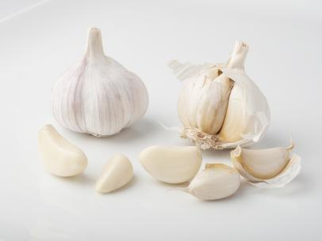
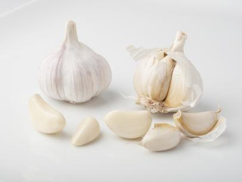

1.Place 5 eggs in a small water filled pot, and boil over the stove for 15 minutes. It is recommended that the pot is covered to ensure faster boiling. Once they are finished boiling, peel and cut small slits in the eggs to allow curry to flow in.

2.Chop 2 medium unpeeled onions, 3 tomatos, 2 3-cm slices of ginger and 3-4 garlic cloves. Grind the onion, ginger and garlic pieces and blend the tomato pieces. Then get a medium sized pot and place over the stove with a tablespoon of vegetable oil added, and dump the onions and tomato in with 2 teaspoons of salt.


 



3.Cook the paste until it is brown, then add a teaspoon each of ground red pepper, ground tumeric, ground cumin, and ground coriander, add a 1/4 teaspoon of garam masala, and dump the garlic and ginger as well. Add two teaspoons of salt, two Cloves, one bay leaf, and one inch of cinnamon, and stir thoroughly and let cook for 5 minutes.


4. Add the eggs and stir thoroughly to mix with the curry. Cook for 5 minutes at least.
Return to index